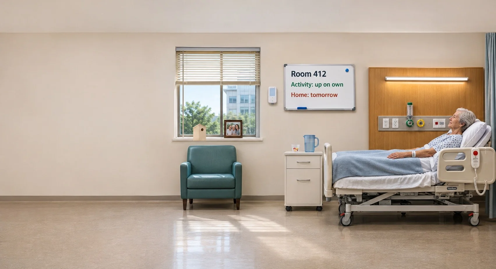

AI for Nurses is a three-course Coursera Specialization from the Duke University School of Nursing, designed for people across the nursing care team. I led the design and delivery with three faculty, with nurses helping shape the examples and activities along the way. It launched in September 2026. So far, learners who have finished rated it 5.0 out of 5, and our partners have funded a second year.
Making sense of AI on a nursing shift
Faculty at the Duke University School of Nursing were noticing a gap: nurses were being asked to use AI-enabled tools without much explanation of what they do or how to work with them. Sometimes a new tool appeared in their workflow with little introduction. Other times, AI was already part of the systems they used, but nurses had no reason to recognize it as AI.
Together with three School of Nursing faculty, we designed the series to give nurses a foundation for understanding and working with AI. It was the first of three planned Coursera Specializations.
Learning where AI shows up across a real shift
Turning what we learned into competencies
After the session, I turned what nurses told us into competencies, the skills we wanted them to leave with. These competencies were the starting point for the action map in the next section, where each one becomes something a nurse does on a shift.
Turning everyday AI moments into decision practice
I used Cathy Moore’s action mapping to keep the design focused on what nurses need to do when AI shows up in their work. The approach starts with a goal, looks at what might get in the way, and builds in practice. Concepts and explanations support those actions rather than drive the course outline.
Our co-design findings guided the first version of the map. As Senior Learning Experience Designer, I facilitated working sessions in Miro with the instructors and project team, and we built the map together.
The interactive version below connects those concepts to actions nurses take on a shift. Select an action to explore the concerns nurses raised in our co-design session, how learners practice, and the ideas that support each decision.
How each course builds AI literacy
The map led to the learning objectives for each course and to the framing we use throughout: four ways AI shows up in a nurse’s workflow. Below, you can explore the learning goals and activities for each course.
The learning progression and objectives
I drew on survey data from working nurses and conversations with partners to draft the progression, then shared it early for feedback. Nursing continuing education requirements also helped guide the learning objectives and design decisions.
- Identify common AI tools used in nursing workflows.
- Explain how AI systems transform clinical data into outputs.
- Distinguish between rule-based systems, machine learning models, predictive AI, and generative AI.
- Describe how healthcare organizations select and govern AI tools.
- Explain how AI models learn from historical healthcare data.
- Interpret common AI outputs with appropriate confidence and skepticism.
- Identify situations where AI tools may perform poorly.
- Recognize how bias can emerge from historical data and healthcare system patterns.
- Apply the AI-SBAR framework to interpret and communicate AI-informed clinical concerns.
- Integrate AI outputs with patient assessment, clinical context, patient goals, and nursing judgment.
- Respond appropriately when AI outputs align with or conflict with bedside observations.
Four ways AI shows up in nurses’ workflows
Nine activity types and the capstones
The capstone in each course
- Course 1Seeing AI in Your WorkflowNurses identify an AI tool in their own practice and describe what it does.
- Course 2Evaluating AI in Your WorkflowNurses choose a tool they have questions about and evaluate it.
- Course 3Applying AI in Your WorkflowNurses reflect on a clinical moment when an AI output shaped a decision.
How testing with nurses refined the courses
By this point, what we were teaching was set. Testing with four practicing nurses shaped how we teach it and why it matters to them. They tried the terms we planned to use, a case scenario, and a demo of the Dialogue activity.
How the project came together
What we know so far
AI for Nurses launched in September 2026, so the data is still coming in. Here’s what I can see so far.
Early data suggests the courses are well aligned and meeting the needs of nurses and administrators. That comes from partner feedback at our two-month review and from registered nurses’ responses in both pilot and live course surveys.
Over the next few months, I’ll be watching learner drop-off, item flags, and quiz question fidelity.
Continuing to improve the courses

The case opens in fullscreen. Press Esc or choose Exit to come back to this page. If fullscreen doesn’t open on your device, open the case in a new tab (opens in a new tab) ↗
This is a proof of concept, not a finished course experience. Before using it with learners, I’d want to work through three things with the team.
- AccessibilityTest keyboard navigation, screen reader support, and other access needs within Coursera, then work out what needs to change or have an alternative.
- Learner dataDecide what would be useful to know about learners’ choices, progress, and engagement. Embedding it as ungraded practice might be a starting point, but we’d need to check what data we could collect for improvement.
- LTI and tradeoffsExplore Coursera’s LTI support to see whether it could help with integration and reporting. I’d also look at which parts benefit from a simulation and where simpler resources, or a mix of both, might serve learners better.